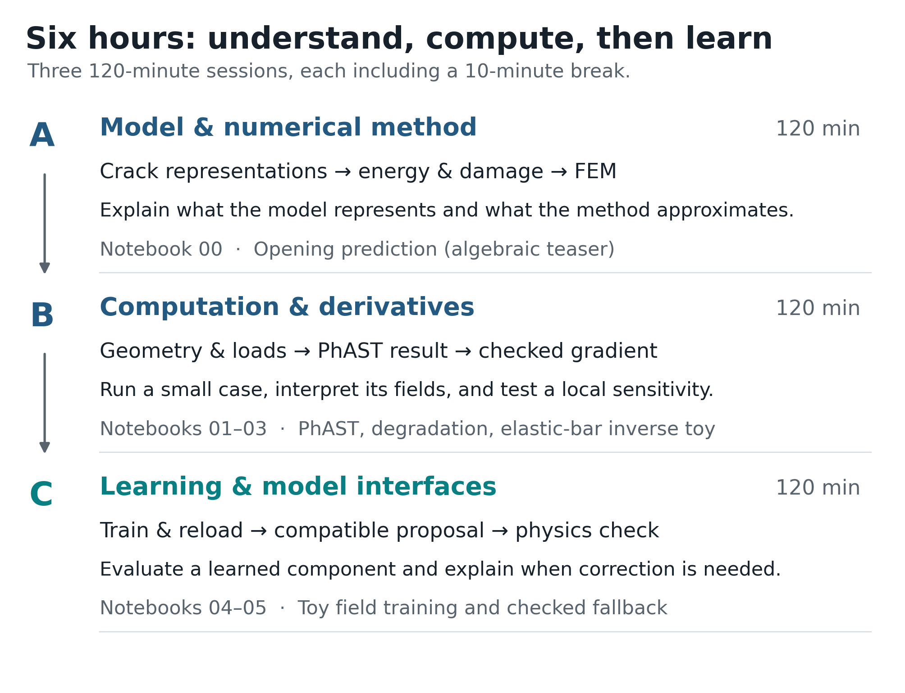

PhAST: a learn-by-doing introduction to phase-field fracture¶
{kind=link}

Figure 1 The course route: make each modelling and computational choice visible.¶
This short textbook develops a reproducible way to reason about phase-field fracture computations. It moves from a stated fracture model to compact computational lessons, retained outputs, exercises, and worked solutions in one reading route. It is not a substitute for a fracture-mechanics text or a production-solver manual. Its goal is narrower and more practical: connect a variational fracture model to a mesh, tensors, differentiation, and honest numerical checks.
The convention throughout is \(d=0\) for intact material and \(d=1\) for fully broken material. A small residual stiffness is retained in practical calculations to avoid a singular elastic operator; it is a numerical device, not a physical claim that a fully cracked material still carries substantial load.
How to use this book
For each topic, make a prediction, read the derivation, inspect the code and its retained output, and answer the exercise before opening the worked solution. The computational lessons are child pages of their theory chapters, not a separate collection of notebook exports. Each may also be downloaded for optional execution in a Jupyter environment.
One lesson contains a small public PhAST quasistatic calculation. The inverse and learning lessons use original teaching models, not fracture-inverse or fracture-acceleration results. When you execute a lesson, record the mesh, parameters, outputs, and observed runtime for that environment. A retained result card never predicts runtime on another machine.
For visual experiments alongside the text, open the interactive explorations. To run the computational lessons, use the environment guide. The printable edition includes the code, recorded figures and complete worked solutions.
- 1. From cracks to computation: learn by doing
- 1.1. What this course is for
- 1.2. Opening experiment: can a good average be a bad prediction?
- 1.3. Reading and running the book
- 1.4. The result card
- 1.5. A vocabulary for careful claims
- 1.6. A first prediction before a first computational lesson
- 1.7. Exercise: label the layers
- 1.8. What to carry into the crack-representation chapter
- 2. Crack representations: sharp, cohesive, and diffuse
- 2.1. The starting point: a sharp crack
- 2.2. Cohesive-zone models: separation on an interface
- 2.3. XFEM: enrich an approximation space
- 2.4. Phase field: replace a surface by a narrow band
- 2.5. A fair comparison
- 2.6. Method and algorithm are not synonyms
- 2.7. Exercise: separate the layers before reading code
- 2.8. Take-away
- 3. Fracture energy: AT1, AT2, degradation, and width
- 3.1. A common energy template
- 3.2. The damage convention and degradation derivative
- 3.3. Computational lesson: inspect a degradation derivative
- 3.4. AT2 and AT1 are normalised choices
- 3.5. Deriving the strong-form damage residual
- 3.6. Irreversibility is a constraint, not a plot style
- 3.7. Width, mesh, and what must be checked
- 3.8. Exercise: one derivative and one scale argument
- 3.9. Sources for this chapter
- 4. From solid mechanics to staggered damage updates
- 4.1. The mechanical subproblem
- 4.2. Why the damage equation resembles diffusion
- 4.3. One load increment, two coupled updates
- 4.4. Staggered, monolithic, Newton, and quasi-Newton
- 4.5. Static and dynamic fracture
- 4.6. Acceptance checks
- 4.7. Predict before the public calculation
- 4.8. Exercise: write the update before reading the code
- 4.9. Sources for this chapter
- 5. Geometry, FEM, tensors, and matrix-free operators
- 5.1. Start with a boundary-value problem
- 5.2. From cells to fields
- 5.3. Tensor shapes are part of the model contract
- 5.4. Assembled and matrix-free routes
- 5.5. Static and dynamic arrays
- 5.6. Where automatic differentiation fits
- 5.7. Inspecting results: four views, one interpretation
- 5.8. Computational lesson: follow a public PhAST calculation
- 5.9. Exercise: identify a silent shape error
- 5.10. Take-away
- 6. Differentiation and an illustrative inverse problem
- 6.1. Define the forward map before differentiating it
- 6.2. Three ways to obtain a sensitivity
- 6.3. Follow the gradient one update at a time
- 6.4. A bounded parameterisation
- 6.5. A minimal inverse experiment
- 6.6. Computational lesson: check a derivative and recover a positive modulus
- 6.7. A directional derivative check
- 6.8. Why inverse recovery can be difficult
- 6.9. Exercise: interpret a gradient result
- 6.10. Sources for this chapter
- 7. Train, save, reload, adapters, and checked proposals
- 7.1. Decide what is being learned
- 7.2. A small supervised-learning contract
- 7.3. Where does the training gradient travel?
- 7.4. Train, save, and reload reproducibly
- 7.5. Computational lesson: train, save, reload, and compare a toy field model
- 7.6. What an adapter can and cannot repair
- 7.7. From a proposal to a checked hybrid calculation
- 7.8. Computational lesson: accept a compatible proposal or fall back
- 7.9. DAgger-style data aggregation
- 7.10. Evaluation: fields, quantities, and failure modes
- 7.11. Exercise: identify the missing provenance
- 7.12. Sources for this chapter
- 8. Practice, solutions, glossary, references, and contributing